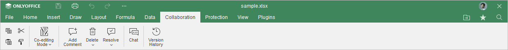
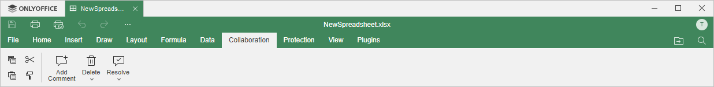

Kartica Collaboration
Kartica Collaboration omogućava kolaborativni rad u Spreadsheet Editor-u. U online verziji možete da delite datoteku, izaberete potreban režim zajedničkog uređivanja i upravljate komentarima. U režimu komentarisanja možete da dodajete i uklanjate komentare i komunicirate putem četa. U desktop verziji možete samo da upravljate komentarima.
Odgovarajući prozor Online Spreadsheet Editor-a:

Odgovarajući prozor Desktop Spreadsheet Editor-a:

Pomoću ove kartice možete:
- podesiti podešavanja deljenja (dostupno samo u online verziji),
- prebacivati se između Strict i Fast režima zajedničkog uređivanja (dostupno samo u online verziji),
- dodavati ili uklanjati komentare ostavljene u tabeli,
- otvoriti Chat panel (dostupno samo u online verziji),
- pratiti istoriju verzija (dostupno samo u online verziji).